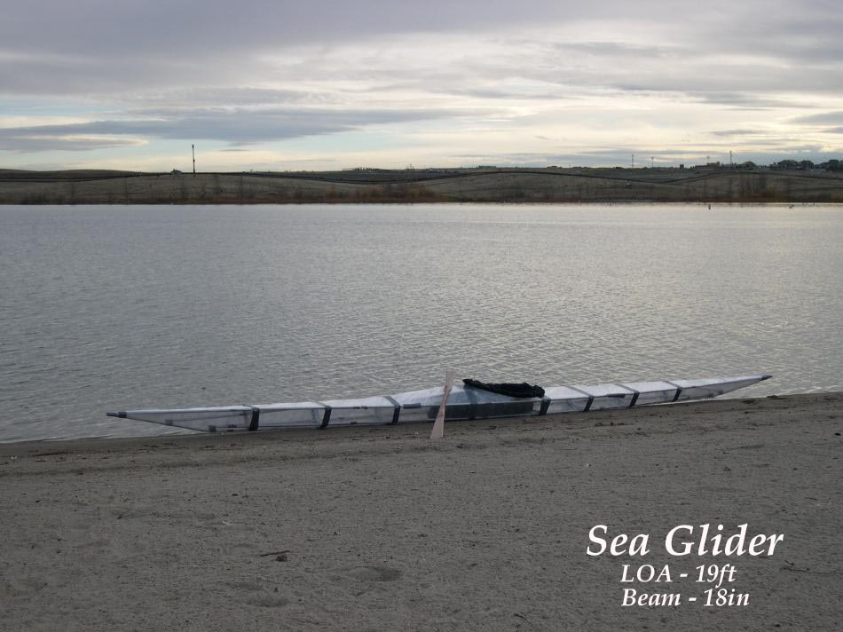

| Sea Glider | Menu Last Page Next Page |
|
 As part of on water tests, the frame was initially covered with the temporary plastic wrap skin seen above. This allows any needed design changes to be made before the PVC skin is constructed. The Masik ( section 4) was determined to be too tall and bulky looking, and a shallower, more rounded Masik was added. See next page. Note also the low deckridge brace attachment at the stems. |
|